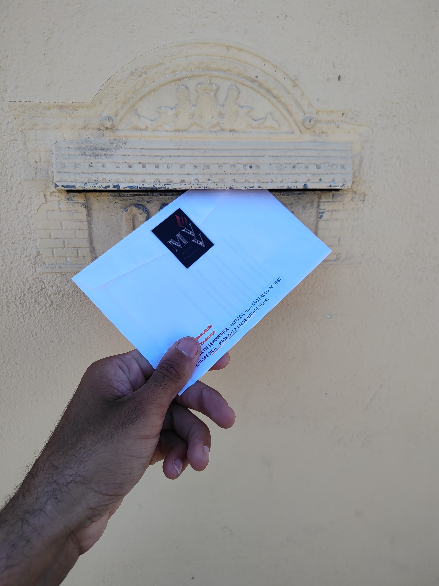

Se você recebeu umas das cartas (ou todas), Deus está falando com você, e Ele te quer de volta pra Ele!!!
Esse projeto veio em nosso coração para que o amor de Deus invada as casas de quem precisa e que anseia pelo Espírito Santo de volta

Estrada Rio São Paulo, 3987 - Vale do Ypê - Seropédica
ministerioverdadeevidapr@gmail.com